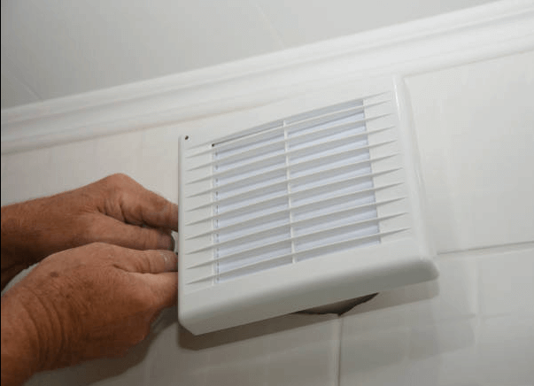
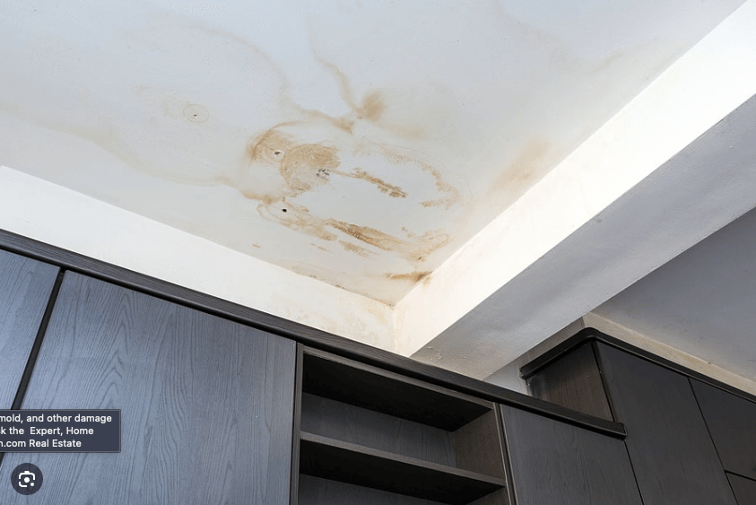
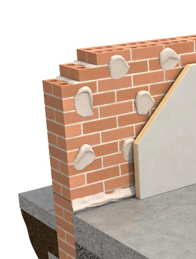
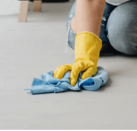
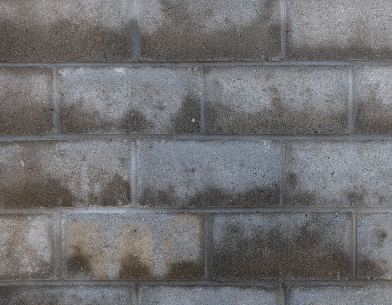
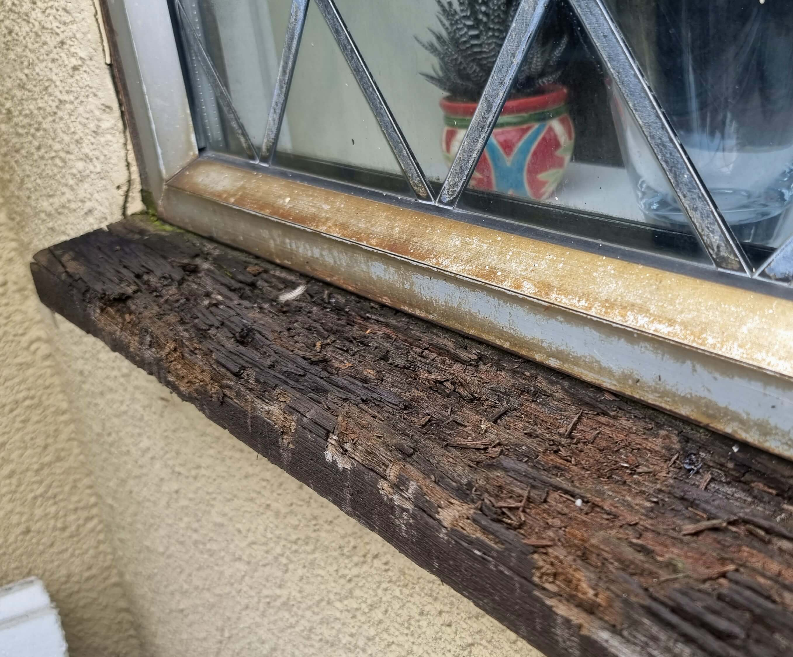
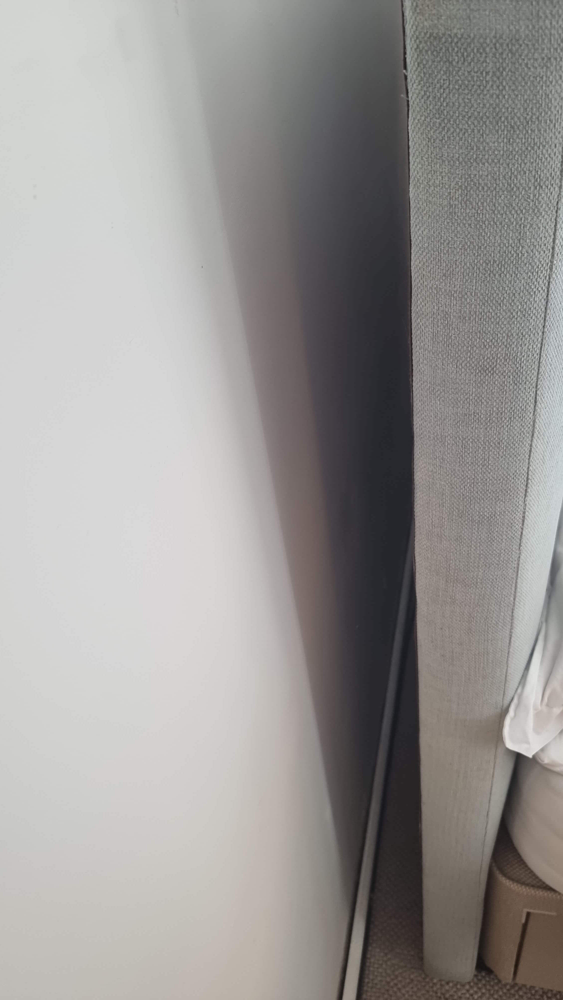

What causes mould, when to call in a professional, and simple ways to keep your home mould-free.
The basics
What causes mould
Mould needs two things: excess moisture, and something organic to feed on. The main causes are:
High humidity
Humid rooms give mould ideal conditions to thrive.
Water leaks
Leaking pipes, roofs or walls bring in the moisture mould needs.
Poor ventilation
Without airflow, moisture can’t escape and builds up.
Condensation
Warm air meeting cold surfaces leaves moisture behind.
Organic materials
Wood, paper, fabric and even dust act as a food source.
Time
In the right conditions mould can start within 24–48 hours.
Getting help
When to call a professional
It’s spread widely across a large area or several rooms.
It’s affecting your health, such as allergies or breathing problems.
You suspect hidden mould behind walls, under floors or in ceilings.
It keeps coming back, so the root cause hasn’t been found.
It’s damaged the building, like plaster or woodwork.
You’re not sure how to tackle it safely.
You’d rather save the time and have it done properly.
What we do
About mould removal
We remove harmful mould of all kinds, including black mould (Stachybotrys). It usually comes from leaks, flooding, poor ventilation, weak insulation, high humidity or plumbing problems.
Mould can hide behind walls, under floors and in roof spaces, and often only shows once it breaks through the surface.
Why it matters for your health
Mould exposure is linked to breathing problems, allergies, headaches, tiredness and sore throats.
A family of four can release 7–15 litres of water a day from cooking, showering and breathing.
Control humidity
Use a dehumidifier and keep humidity between 30% and 50%.

Ventilate
Run extractor fans while cooking and showering.

Fix leaks promptly
Repair pipes, roofs and walls before water builds up.

Insulate properly
Insulated walls, windows and pipes mean less condensation.

Clean regularly
Keep bathrooms and kitchens clean and dry.
Mind your houseplants
Overwatering adds more moisture than you’d think.

Check lofts & basements
Keep them ventilated, leak-free and checked now and then.
Dry washing outside
Or use a vented dryer or dehumidifier and open a window.

Maintain seals
Check seals around doors and windows.

Leave a gap
In winter, pull furniture slightly off outside walls.FAQs
Good questions
Do I have black mould in my home?−
Check areas prone to moisture, such as bathrooms, kitchens and around leaks. Black mould usually shows as black or dark green patches and can feel slimy.
How do I stop mould coming back?+What happens on the day of treatment?+How long does it take?+What areas do you cover?+
Still worried about mould?
Send us a few photos for a free, no-obligation quote.